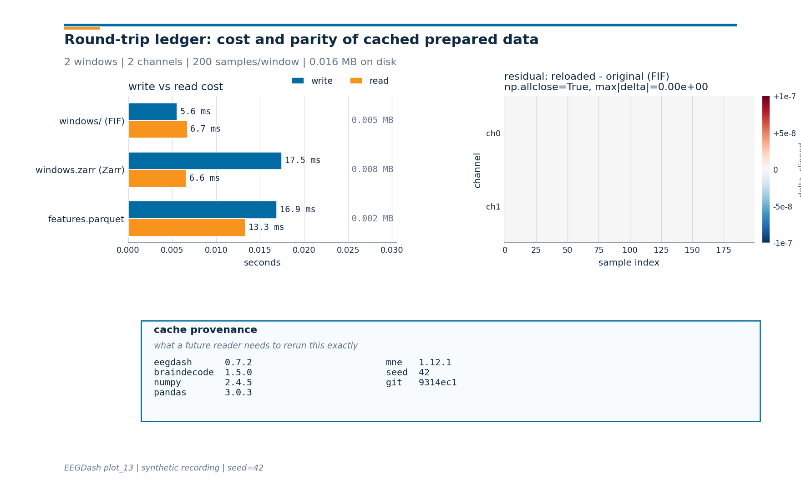

Note
Go to the end to download the full example code or to run this example in your browser via Binder.
Save and reload prepared data#
Difficulty 1-2 | Runtime: 5s | Compute: CPU
Preprocessing EEG is expensive. Filtering, resampling, and windowing one subject can take seconds; doing it for every kernel restart wastes hours over the lifetime of a project. The work has already been done once. The question is how to write it to disk so the next session, the next collaborator, and the future you all skip the recompute.
Caching is not a speed trick. A cached file outlives the code that wrote
it: six months from now, you still need to know which version of
eegdash, which seed, and which git commit produced the array on disk.
Without that record, you cannot trust the cache and you may as well have
recomputed it. Every step below pairs an artifact with the metadata that
makes it reusable: FIF for windowed signals (Larson et al. 2024 / MNE),
Apache Parquet for tabular features, and an optional Zarr store for
chunked random-access reads. The lesson
# ends with a three-panel figure that puts the actual cost on disk.
#
# Validate your result
# ——————–
# - Cache Artifacts. After running, you should find .fif, .parquet,
# or .zarr files in your cache_dir.
# - Data Integrity. Reloaded windows should have identical shapes and
# values to the original (assert with np.allclose).
# - Loading Speed. The hot-cache load (Step 3) should be significantly
# faster than the first-run preprocessing (Step 1).
Keywords: offline, caching, I/O
Learning objectives#
Save a windowed
BaseConcatDatasetwithsave()and reload it withbraindecode.datautil.load_concat_dataset().Write a per-window feature table with
pandas.DataFrame.to_parquet()and reload it withpandas.read_parquet(), preserving dtypes.Verify the saved windows round-trip bit-for-bit (within float32) so the cache is safe to consume downstream.
Stamp every cache with a provenance record (package versions, seed, git short-SHA) so a future reader can reproduce the upstream pipeline [Wilkinson et al., 2016].
Read the cost of each format off a single ledger figure: write-time, read-time, on-disk MB, and the residual heatmap for parity.
Requirements#
Estimated time: about 5 s on CPU, no GPU.
Network: none. The signal is synthesized locally so the lesson runs offline (E3.24). Every artifact is routed through
tempfile.mkdtemp()so we never write outside/tmp.Prerequisites: Preprocess EEG and create windows (how a windowed
BaseConcatDatasetis built) and Extract band-power features (how a feature row maps to a window). Concept reference: EEGDash objects: EEGDash, EEGDashDataset, EEGChallengeDataset.
Setup. np.random.seed(42) makes the synthetic signal byte-identical
across runs (E3.21).
from __future__ import annotations
import os
import shutil
import subprocess
import tempfile
import time
from pathlib import Path
import matplotlib.pyplot as plt
import mne
import numpy as np
import pandas as pd
import braindecode
import eegdash
from braindecode.datasets import BaseConcatDataset, RawDataset
from braindecode.datautil import load_concat_dataset
from braindecode.preprocessing import create_fixed_length_windows
from eegdash.viz import use_eegdash_style
use_eegdash_style()
SEED = 42
np.random.seed(SEED)
mne.set_log_level("ERROR")
print(
f"eegdash {eegdash.__version__} | braindecode {braindecode.__version__} | "
f"numpy {np.__version__}"
)
eegdash 0.7.2 | braindecode 1.5.0 | numpy 2.4.5
Cache files outlive code: a mental model#
Two pictures help. First, the artifact tree this tutorial produces:
<cache_root>/
windows/ # FIF: one .fif per child + JSON sidecars
0/0-raw.fif # raw samples + info
0/description.json # subject / task / run
0/window_kwargs.json # how the windows were cut
windows.zarr/ # optional: Zarr-chunked, blosc-compressed
features.parquet # tabular: one row per window, typed cols
Second, the read path. load_concat_dataset(windows_path, preload=True)
rehydrates the FIF tree into a BaseConcatDataset
with the metadata frame intact. pd.read_parquet returns a
pandas.DataFrame with the original dtypes. Both paths are
version-stamped at the side because the alternative is silent rot: a
cache that loads but no longer matches the code.
Why split signals from features? FIF stores the full (n_channels,
n_times) array per window, which the model needs. Parquet stores
columnar features, which downstream notebooks consume without ever
touching the signal. Caching both lets each tool read the right shape.
Step 1: build a small windowed dataset#
We simulate one subject of resting EEG (2 channels, 4 s at 100 Hz) and slice it into two non-overlapping 2-second windows. A miniature dataset keeps runtime under a second yet exercises every code path of the real preprocessing pipeline.
Predict. With window_size_samples == window_stride_samples and
drop_last_window=True, how many windows fit in 4 s of signal at
100 Hz with 2-second windows?
SFREQ, WIN_S = 100, 2
signal = np.random.randn(2, 4 * SFREQ).astype("float32") * 1e-6
info = mne.create_info(["Cz", "Pz"], sfreq=SFREQ, ch_types="eeg")
recording = RawDataset(
mne.io.RawArray(signal, info),
description={"subject": "S01", "task": "rest"},
)
windows = create_fixed_length_windows(
BaseConcatDataset([recording]),
start_offset_samples=0,
stop_offset_samples=None,
window_size_samples=WIN_S * SFREQ,
window_stride_samples=WIN_S * SFREQ,
drop_last_window=True,
preload=True,
)
n_windows = len(windows)
sample_shape = windows[0][0].shape
n_channels, window_samples = int(sample_shape[0]), int(sample_shape[1])
pd.Series(
{
"n_windows": n_windows,
"windows[0][0].shape": str(tuple(sample_shape)),
"X.dtype": str(np.asarray(windows[0][0]).dtype),
"child class": type(windows.datasets[0]).__name__,
},
name="value",
).to_frame()
Step 2: save the windows to FIF#
save() writes one
subdirectory per child dataset, each holding a -raw.fif (or
-epo.fif) plus JSON sidecars for description, target name, and
preprocessing kwargs. Caching the full bundle, not just the array,
carries the metadata a downstream tutorial needs (subject id, task,
window kwargs).
Run. Write to a fresh temporary directory and time the call; the
write_s and size_mb figures feed Panel 1 of the final figure.
cache_root = Path(tempfile.mkdtemp(prefix="eegdash_save_"))
windows_path = cache_root / "windows"
t0 = time.perf_counter()
windows.save(str(windows_path), overwrite=True)
fif_write_s = time.perf_counter() - t0
def _dir_size_bytes(path: Path) -> int:
"""Sum file sizes under ``path`` recursively (Windows-portable, no ``du``)."""
total = 0
for root, _, files in os.walk(path):
for name in files:
total += (Path(root) / name).stat().st_size
return total
fif_size_mb = _dir_size_bytes(windows_path) / 1e6
saved_files = sorted(
p.relative_to(cache_root).as_posix() for p in windows_path.rglob("*")
)
print(f"saved: {windows_path}")
print(f"artifact tree (first 6): {saved_files[:6]}")
print(f"FIF write_s={fif_write_s:.4f} s, size_mb={fif_size_mb:.4f}")
saved: /tmp/eegdash_save_d5nm984m/windows
artifact tree (first 6): ['windows/0', 'windows/0/0-raw.fif', 'windows/0/description.json', 'windows/0/metadata_df.pkl', 'windows/0/raw_preproc_kwargs.json', 'windows/0/window_kwargs.json']
FIF write_s=0.0056 s, size_mb=0.0055
Step 3: reload the windows in a fresh handle#
In a new kernel you would call load_concat_dataset(windows_path,
preload=True) exactly like below. preload=True returns a float32
array in RAM, which is what every downstream tutorial expects.
Run. Rehydrate the artifact, time the read, and confirm we got a
BaseConcatDataset of the right length.
t0 = time.perf_counter()
reloaded_fif = load_concat_dataset(windows_path, preload=True)
fif_read_s = time.perf_counter() - t0
print(
f"reload OK: type={type(reloaded_fif).__name__}, n={len(reloaded_fif)}, "
f"read_s={fif_read_s:.4f}"
)
reload OK: type=BaseConcatDataset, n=2, read_s=0.0067
Investigate. Shape and sample-level parity. The spec asserts
reloaded.shape == original.shape and that the metadata frame
survives the round-trip. FIF rounds samples through float32, so we
use numpy.allclose() rather than numpy.array_equal(). The
residual we keep here drives Panel 2 of the figure.
x_orig = np.asarray(windows[0][0]).copy()
x_re = np.asarray(reloaded_fif[0][0]).copy()
residual = x_re - x_orig
assert len(reloaded_fif) == n_windows, "reloaded window count differs"
assert x_re.shape == sample_shape, "reloaded window shape differs"
assert np.allclose(x_re, x_orig, atol=1e-7), "samples drifted beyond float32 tol"
assert list(reloaded_fif.description.columns) == list(windows.description.columns)
print(
f"shapes match: original={sample_shape}, reloaded={x_re.shape}; "
f"max|residual|={float(np.max(np.abs(residual))):.2e}"
)
shapes match: original=(2, 200), reloaded=(2, 200); max|residual|=0.00e+00
Step 4: optional Zarr cache (chunked random access)#
FIF is fine for one recording but its random-access cost grows
linearly with file size. Zarr stores fixed-size chunks and reads any
window in tens of milliseconds even for hundreds of GB.
Braindecode ships the conversion behind
push_to_hub(), and the
private helper _convert_to_zarr_inline exposes it without the
Hugging Face dependency. We probe for it at runtime and skip the cell
without raising when the optional extra is absent.
Run. Detect the Zarr code path; record write-time, read-time, and on-disk MB into the same ledger.
try:
BaseConcatDataset._convert_to_zarr_inline # noqa: B018 - feature probe
has_zarr = True
except (AttributeError, ImportError):
has_zarr = False
zarr_record = None
if has_zarr:
zarr_path = cache_root / "windows.zarr"
try:
t0 = time.perf_counter()
windows._convert_to_zarr_inline(
zarr_path,
compression="blosc",
compression_level=5,
chunk_size=5_000_000,
)
zarr_write_s = time.perf_counter() - t0
t0 = time.perf_counter()
reloaded_zarr = type(windows)._load_from_zarr_inline(zarr_path, preload=True)
zarr_read_s = time.perf_counter() - t0
zarr_size_mb = _dir_size_bytes(zarr_path) / 1e6
zarr_record = {
"name": "windows.zarr (Zarr)",
"write_s": zarr_write_s,
"read_s": zarr_read_s,
"size_mb": zarr_size_mb,
}
print(
f"Zarr write_s={zarr_write_s:.4f}, read_s={zarr_read_s:.4f}, "
f"size_mb={zarr_size_mb:.4f}"
)
except (ImportError, RuntimeError) as exc:
has_zarr = False
print(f"Zarr extra unavailable, skipping: {type(exc).__name__}: {exc}")
else:
print("Zarr extra not installed (pip install braindecode[hub]); skipping.")
Zarr write_s=0.0175, read_s=0.0066, size_mb=0.0080
Step 5: save and reload a tabular feature table#
Many downstream notebooks consume a (n_windows, n_features) table
rather than raw signals. Parquet fits that need: columnar, typed,
compressed, and readable from R, Julia, Python, and DuckDB. We compute
one feature per channel per window (per-channel mean) and assert the
round trip preserves dtypes, which is the property a feature store
relies on.
features = pd.DataFrame(
[
{
"Cz_mean": float(windows[i][0][0].mean()),
"Pz_mean": float(windows[i][0][1].mean()),
"window_idx": i,
}
for i in range(n_windows)
]
)
features_path = cache_root / "features.parquet"
t0 = time.perf_counter()
features.to_parquet(features_path, index=False)
parquet_write_s = time.perf_counter() - t0
t0 = time.perf_counter()
features_back = pd.read_parquet(features_path)
parquet_read_s = time.perf_counter() - t0
pd.testing.assert_frame_equal(features_back, features)
parquet_size_mb = features_path.stat().st_size / 1e6
print(f"feature table dtype:\n{features.dtypes.to_string()}")
print(
f"Parquet write_s={parquet_write_s:.4f}, read_s={parquet_read_s:.4f}, "
f"size_mb={parquet_size_mb:.4f}"
)
features.head()
feature table dtype:
Cz_mean float64
Pz_mean float64
window_idx int64
Parquet write_s=0.0169, read_s=0.0133, size_mb=0.0024
Step 6: assemble the format-records ledger#
Every row of the table below feeds Panel 1 of the final figure. The
values are live; nothing is hard-coded. has_zarr=False simply omits
the Zarr row.
format_records = [
{
"name": "windows/ (FIF)",
"write_s": fif_write_s,
"read_s": fif_read_s,
"size_mb": fif_size_mb,
},
]
if zarr_record is not None:
format_records.append(zarr_record)
format_records.append(
{
"name": "features.parquet",
"write_s": parquet_write_s,
"read_s": parquet_read_s,
"size_mb": parquet_size_mb,
}
)
records_df = pd.DataFrame(format_records)
records_df["write_ms"] = (records_df["write_s"] * 1000).round(2)
records_df["read_ms"] = (records_df["read_s"] * 1000).round(2)
records_df[["name", "write_ms", "read_ms", "size_mb"]]
Step 7: provenance stamp#
The cache outlives the code. We record what a future reader needs to
rerun the upstream pipeline: package versions, the seed, and the git
short-SHA. The subprocess.run() call falls back gracefully when
git is unavailable (CI sandbox, source archive without .git).
def _git_short_sha() -> str:
"""Return the current git short-SHA, or a fallback string when git is missing."""
try:
result = subprocess.run(
["git", "rev-parse", "--short", "HEAD"],
capture_output=True,
text=True,
timeout=2.0,
check=False,
)
sha = (result.stdout or "").strip()
return sha or "git: not available"
except (OSError, subprocess.SubprocessError):
return "git: not available"
provenance = {
"eegdash": eegdash.__version__,
"braindecode": braindecode.__version__,
"numpy": np.__version__,
"pandas": pd.__version__,
"mne": mne.__version__,
"seed": str(SEED),
"git": _git_short_sha(),
}
pd.Series(provenance, name="value").to_frame()
A common mistake, and how to recover#
Run. Forgetting overwrite=True is the single most common slip
on the second run of this tutorial; we trigger it on purpose so the
FileExistsError is visible [Nederbragt et al., 2020]. A second
common pitfall is calling load_concat_dataset on a path that is
missing its sidecars; the helper raises a clear error rather than
returning a corrupt dataset.
try:
windows.save(str(windows_path), overwrite=False)
except (FileExistsError, OSError, RuntimeError) as exc:
print(f"Caught {type(exc).__name__}: {str(exc)[:80]}")
shutil.rmtree(windows_path)
windows.save(str(windows_path), overwrite=False)
print("Recovery: rmtree + save without overwrite=True succeeded.")
# Wrong directory layout (no sidecars). load_concat_dataset rejects it.
broken = cache_root / "broken_layout"
broken.mkdir(parents=True, exist_ok=True)
try:
load_concat_dataset(broken, preload=True)
except (FileNotFoundError, IndexError, KeyError, ValueError) as exc:
print(
f"Recovery: load_concat_dataset rejected broken layout "
f"({type(exc).__name__}: {str(exc)[:60]})."
)
Caught FileExistsError: Subdirectory /tmp/eegdash_save_d5nm984m/windows/0 already exists. Please select
Recovery: rmtree + save without overwrite=True succeeded.
Recovery: load_concat_dataset rejected broken layout (IndexError: list index out of range).
Round-trip ledger figure#
Panel 1 reports the cost (write-time, read-time, on-disk MB) for each
format. Panel 2 shows the residual heatmap of reloaded - original
for one window, hard-clipped to plus-or-minus 1e-7 so any small
drift is visible; the title carries numpy.allclose() and
max|delta|. Panel 3 is the provenance card. Drawing primitives
live in a sibling _ledger_figure module so the rendering plumbing
stays out of this tutorial; the call below is the only line that
matters.
from _ledger_figure import draw_ledger_figure
fig = draw_ledger_figure(
format_records=format_records,
residual_array=residual,
provenance_dict=provenance,
n_windows=n_windows,
n_channels=n_channels,
window_samples=window_samples,
plot_id="plot_13",
)
plt.show()

Modify#
Your turn. Change the synthetic signal length (e.g.
signal = np.random.randn(2, 16 * SFREQ)) and rerun Steps 1 to 6.
Predict before running: how should len(windows) change? How should
size_mb for the FIF row change? What about Parquet, which stores
one row per window? The Zarr row should grow with chunked
compression, not with raw byte count.
Make#
Mini-project. Write a tiny cache_or_compute wrapper that calls
compute_fn only on a cache miss and stamps a manifest.json next
to the artifact. Persisting the version dict alongside the data is the
smallest useful step toward FAIR provenance [Wilkinson et al., 2016].
import json
def cache_or_compute(path: Path, compute_fn, *, force: bool = False):
"""Return a cached BaseConcatDataset, computing it once on cache miss.
On a cache miss the function writes a sibling ``manifest.json`` with
the current package versions and seed so a future reader can verify
the cache against the code.
"""
manifest_path = path.with_suffix(".manifest.json")
if path.exists() and not force:
return load_concat_dataset(path, preload=True)
result = compute_fn()
result.save(str(path), overwrite=True)
manifest_path.write_text(
json.dumps(
{
"eegdash": eegdash.__version__,
"braindecode": braindecode.__version__,
"numpy": np.__version__,
"seed": SEED,
"git": _git_short_sha(),
},
indent=2,
)
)
return result
demo_path = cache_root / "demo_cache"
first = cache_or_compute(demo_path, lambda: windows)
second = cache_or_compute(demo_path, lambda: windows)
manifest_path = demo_path.with_suffix(".manifest.json")
assert len(first) == len(second) == n_windows
print(
f"cache_or_compute OK: hits={demo_path.exists()}, manifest={manifest_path.exists()}"
)
cache_or_compute OK: hits=True, manifest=True
Result#
We turned a synthetic recording into a 2-window dataset, persisted both the windowed signals (FIF, optionally Zarr) and a derived feature table (Parquet), and reloaded each artifact with shape, dtype, and value parity. The ledger figure puts the cost of each format on one page so the trade-off is visible without a stopwatch.
shutil.rmtree(cache_root, ignore_errors=True) # keep the cache in real projects
print("cleanup OK")
cleanup OK
Wrap-up#
You can now stop paying the preprocessing cost on every kernel restart; downstream tutorials consume the saved artifact directly. Next: Extract band-power features extracts a real feature table from cached windows; How-to: work offline against a populated EEGDash cache walks through the cache contract for sealed-environment runs.
Try it yourself#
Re-save with
overwrite=Falseand observe theFileExistsError.Add a
manifest.jsonrecording package versions, the seed, and a DOI; rerun the ledger and confirm the file count grew by one.Compare Parquet vs CSV size on the same table; Parquet is typically smaller because it stores typed columns and applies dictionary encoding to repeated values.
Set
compression="zstd"in the Zarr call and comparesize_mbagainstcompression="blosc".
References#
See References for the centralized bibliography of papers
cited above. Add or amend an entry once in
docs/source/refs.bib; every tutorial inherits the update.